Wszystkie obrazy wyrównane: ta sama wysokość postaci, stopy na tej samej linii. Szare: skala z Blendera (manekin MPFB z butami-prostopadłościanami w kątach 0,40–0,70; zielona ramka = cel 0,60). Porównuj wierzchy butów, rozstaw stóp w pionie (bok) i widoczność czubka głowy oraz ramion. Pomiar automatyczny kąta jest w researchu; liczby dopiszę, gdy będzie wiarygodna metoda.
LoRA kątów 1,3 z zatwierdzonego konceptu.
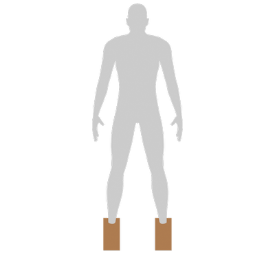
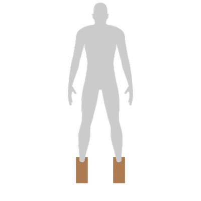
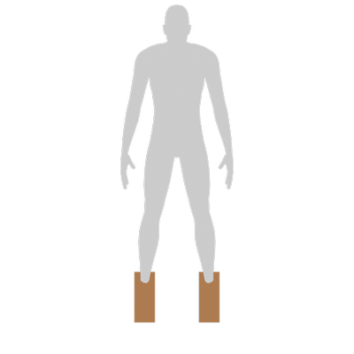
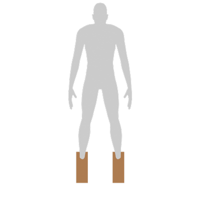
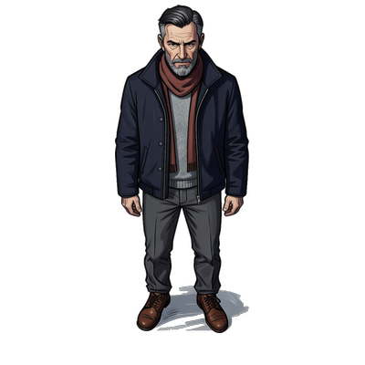
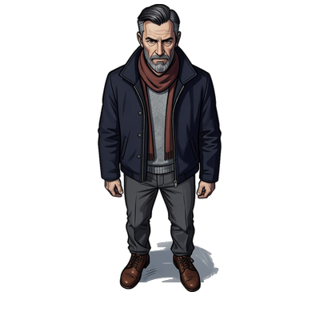
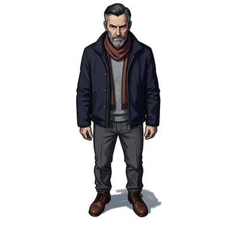
Z konceptu, render boku MPFB jako druga referencja, LoRA 1,3.
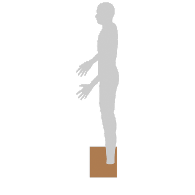
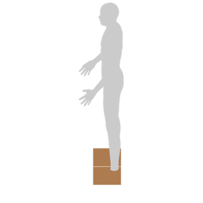
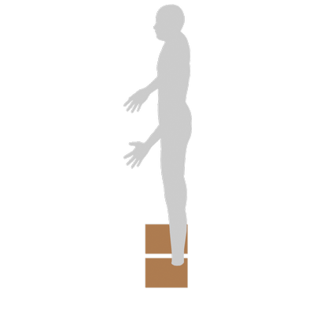
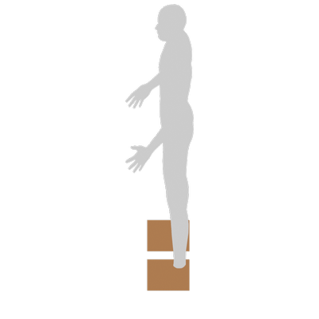
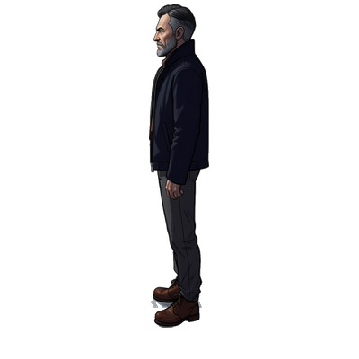
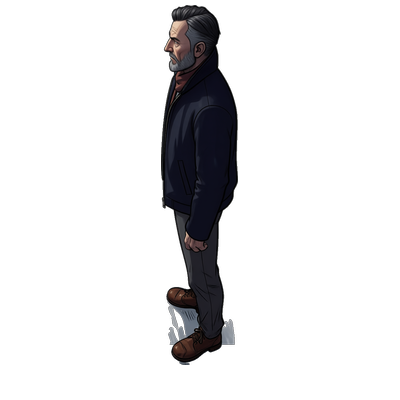
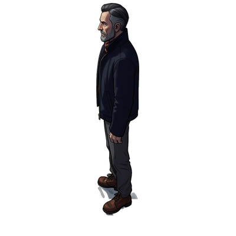
Z przodu tego samego zestawu (A z A, B z B, C z C), LoRA 1,0.
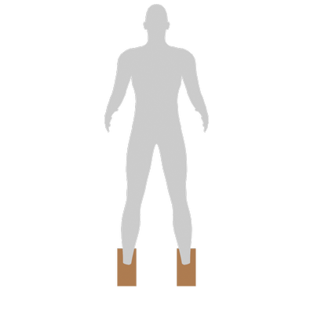
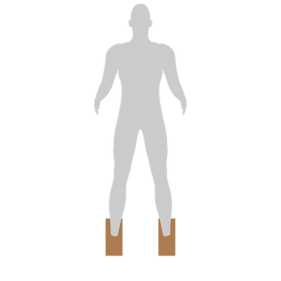
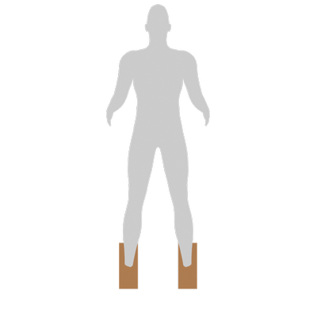
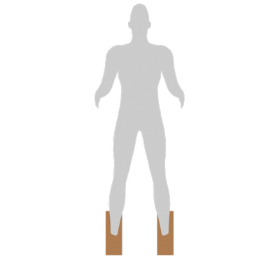
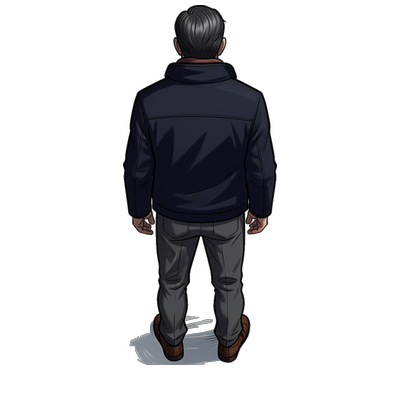
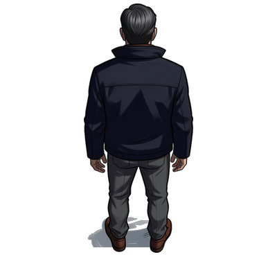
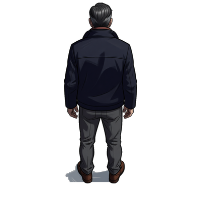
Wybór: przód –, bok –, tył –